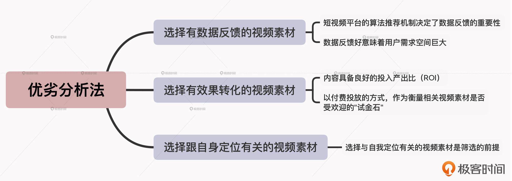

- 00 开篇词 短视频时代下，怎么把握好变现风口？.md.html
- 01 爆款短视频的底层逻辑：用心拍的短视频为啥没人看？.md.html
- 02 爆款短视频的底层逻辑：如何轻松打造自我特色？.md.html
- 03 精益创业法：如何快速跨过从0到1这道坎？.md.html
- 04 SWOT法：这么明显的个人优势你为啥就是看不到？.md.html
- 05 效用函数法：如何用量化的方式进行高效创作？.md.html
- 06 二次创新实验法：如何打造个人的差异化定位？.md.html
- 07 平台定位：如何选择最适合自己的创作平台？.md.html
- 08 如何快速找到各大短视频平台的正确切入点？.md.html
- 09 选题（上）：如何利用思考清单找到合适选题？.md.html
- 10 选题（下）：如何为不同的内容定制合适选题？.md.html
- 11 优劣分析法：如何快速筛选适合创作的视频素材？.md.html
- 12 标题（上）：如何利用微创新巧妙找到爆款标题？.md.html
- 13 标题（下）：如何用对号入座的方式抓住标题亮点？.md.html
- 14 视频封面（上）：如何快速抓住用户注意力？.md.html
- 15 视频封面（下）：如何传递最有价值的信息？.md.html
- 16 视频剪辑：如何轻松掌握视频化剪辑的三大公式？.md.html
- 17 效果反馈法：剪辑很容易，为什么你却一直学不会？.md.html
- 18 剪辑对比（上）：如何避开常见的短视频剪辑陷阱？.md.html
- 19 剪辑对比（下）：如何利用剪辑技巧提升视频质量？.md.html
- 20 拉片法：用电影创作的方式学习爆款短视频运营技巧.md.html
- 21 用户留存率：为什么粉丝很多但忠实拥趸却很少？.md.html
- 22 点赞率（上）：如何有效提升短视频的点赞量？.md.html
- 23 点赞率（下）：三种方法轻松提升用户对内容的认可度.md.html
- 24 上瘾机制：为什么视频观看量很高却没人留言？.md.html
- 25 避坑指南：为什么很多短视频账号中途做不下去了？.md.html
- 26 如何找到适合自己的短视频变现模式？.md.html
- 27 多元化变现：如何明确不同创作阶段的变现任务？.md.html
- 28 多内容变现：不同内容的主打变现模式是什么？.md.html
- 结束语 一切成大事者，都是终身学习者.md.html
- 捐赠
11 优劣分析法：如何快速筛选适合创作的视频素材？
你好，我是周维。
前面我们用了两节课的时间，学习了如何为自己的内容领域找到合适的创作选题，而在确定了选题之后，接下来就该为打造爆款短视频筛选合适的视频素材了。
对于短视频创作新手来说，视频素材要去哪里找、怎么找，是一个很头疼的问题；而对于已经有了一些创作经验的人来说，要用的素材不够多、想要的素材找不到，同样也是非常让人头疼的事情。
关于去哪里找视频素材，其实你随便在网上搜索一下，就能发现一箩筐的视频素材网站，所以在课程里我就不去啰嗦地回答这个问题了。
这节课，我要重点给你介绍的，是如何快速筛选适合自己内容创作的视频素材的方法，以此让你在创作短视频的时候可以提升创作效率，达到提高自己作品成为爆款的几率。
那么具体是什么方法呢？其实就是优劣分析法。
优劣就是好与差的区别，所谓的优劣分析法就是通过一系列具体的分析方法，来划分出视频素材的质量好坏和效果差异，以此筛选出适合自身的视频素材。
因此，根据优劣分析法的不同表现，我把视频素材的筛选方法划分为了三种，分别是数据反馈、效果转化、自身定位，下面我们就来看看这三种方法。
选择有数据反馈的视频素材
我们先说第一种筛选方法，选择有数据反馈的视频素材。
什么叫有数据反馈的视频素材呢？简单来说，就是指我们能清晰地了解到该条视频素材的热度数值、播放量、点赞量、分享量等多个数据。
我们都知道，热度高的内容会吸引更多用户的注意力，而通过数据反馈，我们就既可以明确选取的视频素材是不是受用户欢迎的，也能够根据数据有选择性地寻找素材，避免浪费更多的时间成本。
这也体现了优劣分析法的特点，因为有很多创作者在选择视频素材的时候，无法拿出判断好与差的参照标准，而数据反馈恰恰更加直观、具体，而且也是证明选择的视频素材最有效的一种方式。
为什么这么说呢？我认为主要有两点。
第一，短视频平台的算法推荐机制决定了数据反馈的重要性。
现在各个短视频平台的内容推荐都会依靠大数据算法，而算法推荐内容的一个重要参考维度，就是短视频数据的优劣。因此当你选择了数据较好的视频素材，也就代表着你找到了这个平台上用户喜欢看的内容，从而就可以提高你的短视频内容的爆款几率。
第二，数据反馈好意味着用户需求空间巨大。
在一定时间内，一个平台上数据比较好的短视频内容，表明了这类内容有巨大的用户需求空间，而你选择这类视频素材作为自己内容中的一部分，也可以有效的获取目标用户。
那么要如何选择有数据反馈的视频素材呢？
比如说，我是一个职场类的短视频创作者，现在要通过有数据反馈的方式来寻找视频素材，具体的做法可以是这样的：
- 首先，选择一个或几个短视频平台，作为搜集视频素材的对象。
如果你主攻的是一个平台，就只需要重点搜集这个平台上的视频素材就可以了。但是，如果你创作的视频内容是全网统发，那么你的搜集维度就应该是几个主流的短视频平台。背后的道理也很简单，这些短视频平台的定位是有差异的，比如你在快手上搜集到的视频素材，未必在抖音上就受欢迎。
- 然后，去这个平台上搜索关键词“职场”，寻找一段时间内各项数据表现好的短视频内容。当然，我也可以通过短视频平台上的TAG分类，寻找相关的内容。
请注意，这里寻找到的数据反馈比较好的视频素材，一定不是孤立的个别视频，而是有很多创作者都在创作的同一个类型、方向的短视频。如果仅仅只是单个短视频的数据反馈很好，但没有更多的创作者也创作这类视频内容，就说明这类视频内容存在一些问题，被平台限制了，因此一定不要跟进。
- 最后，将统计出来的相关视频素材，以各项数据为维度在Excel上或其他工具上进行统计，寻找到表现不错的短视频内容，并将此作为自己创作的一个方向，然后根据自己的解读去使用素材创造新的内容出来。
总而言之，当你去使用有数据反馈的视频素材时，要记得甄选素材样本的数据来源平台，因为不同的平台得到的数据样本是不一样的。另外，找到数据反馈比较好的视频素材后，要看一下是否是大多数同类创作者都会采用的视频素材样本。
选择有效果转化的视频素材
我们接着来说第二种筛选方法，也就是选择有效果转化的视频素材。
所谓的有效果转化，就是指内容具备良好的投入产出比（ROI），也就是我们可以通过具体投放与收益的比例差，来确定视频素材的优劣。
我举个简单的例子。抖音、快手上，都会有投放内容的设置功能，比如抖音叫Dou+，快手叫作品推广，虽然二者的名字不一样，但其投放的模式是一样的，都是让用户投入一定的金额换来不等的曝光量。
事实上，这样的内容投放设置也渐渐成为了短视频平台的标配。要细究具体原因的话，我认为是由于目前平台算法的机制还不够成熟，使得还有很多不错的内容不能及时、有效、全面的推荐给更多匹配的用户，导致创作者用心创作的作品内容曝光量比较低。
比如说，你是一个财经知识类的短视频创作者。按照正常的算法逻辑，你每次发布的内容，第一次的推荐量与别人是一样的，只有在第一次得到用户的喜爱之后，才会得到第二次的加量推荐，然后一层层向上攀登。但是，如果你的内容在某一个“圈层”中，没有得到一定数量用户的喜爱，平台就会认为是不受欢迎的内容，就不会继续推荐了。而实际上并不是这样，你的内容没有问题，只是在第一次匹配的用户不合适，因而导致产生了推荐偏差。
所以，你可以将付费投放的方式，作为衡量相关视频素材是否受欢迎的“试金石”，这样可以带来最直接的效果转化，就是你能明确地通过自己投入了多少钱，来了解具体带来了多少播放量、评论量等等。
这样，其实你也就知道了自己选择的视频素材是否合适。
不过要注意，在采用这个方法去选择视频素材时，切记刚开始不要投出太大的金额，千万别用赌的心态去做这件事。
选择跟自身定位有关的视频素材
最后一种筛选方法，就是选择与自身定位相关的视频素材。
俗话说，只有合适的才是最好的。素材的选择决定了内容创作的质量和方向，选择与自我定位有关的视频素材是筛选的前提。
为什么呢？我举个简单的例子。
之前有一个Vlog领域的创作者，按照效果转化的方法选择视频素材，基本上都能让每一条创作的短视频获得不错的播放量，而其他的数据指标也是稳步攀升。有一次，网络上出现了一个小孩因与家长争吵，在半路直接跳桥的社会事件，一时间成为大家关注的焦点。这个时候他并没有想太多，直接将这个事件作为自己的视频素材，进行了观点的阐述，但是播放量刚刚上来，作品就遭到了下架处理。
平台给出的解释是他不适合这方面内容的创作，也就是不具备新闻资质，不能发布这样的作品。而其实最根本的原因，就是他没有站在自我的角度去选择合适的视频素材，单纯只是看到了数据表现比较好的视频素材，这才直接导致了平台惩罚的后果。
请你记住，不管是什么样的视频素材，一定要以符合自我定位为前提，如果不符合，哪怕这一条视频素材效果转化、数据反馈再好，也不能去伸手选择。
最后，在学会了这些分析视频素材优劣的方法之后，还有一个重要的事情不能忘记，那就是将筛选好的视频素材进行统一的归类处理，这种处理的方式，就是要选择适合的素材库了。
小结
这节课，我们学习了三种快速筛选视频的方法：有数据反馈、有效果转化、跟自身定位有关。在使用这三个办法时，我们要注意一点，就是寻找到的视频素材最好可以同时满足于这三种方法，而不是单纯只从一个维度入手。
最后我想说的是，很多人在创作一段时间之后，或许会陷入到创作的“瓶颈期”，比如可以创作的内容虽然有很多，但感觉哪一种都不适合自己。之所以会这样，我认为主要的原因就是对创作的敏感度降低了。
这个时候，我建议你不要站在自我的角度去寻找视频素材，而是要站在用户的角度，去寻找哪一种视频素材是他们最愿意接受、喜欢的，相信你会很快度过选择视频素材的低谷。

思考题
你是如何积累自己的视频素材的？还有，你是通过什么方法来判断什么样的视频素材适合自己？欢迎在留言区分享，我们一起交流讨论。
如果你觉得有收获，欢迎把今天的内容分享给更多的朋友。感谢你的阅读，我们下一讲再见。
© 2019 - 2023 Liangliang Lee. Powered by gin and hexo-theme-book.